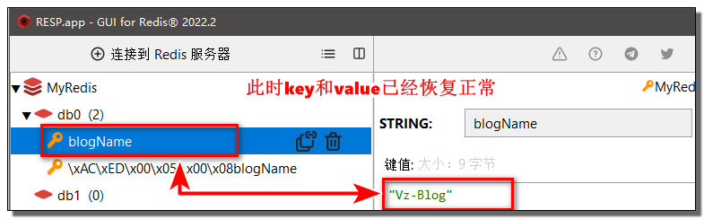
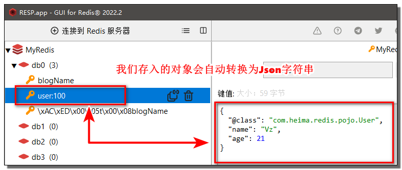
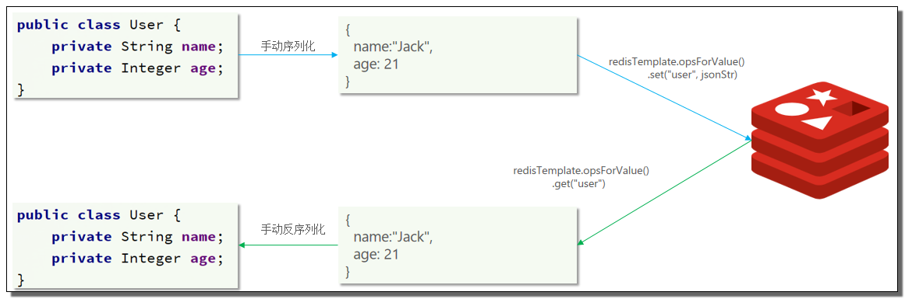

一、Redis入门
1.认识NoSQL
1.1 什么是NoSQL
- NoSQL最常见的解释是”
non-relational“， 很多人也说它是”Not Only SQL“ - NoSQL仅仅是一个概念，泛指非关系型的数据库
- 区别于关系数据库，它们不保证关系数据的ACID特性
- NoSQL是一项全新的数据库革命性运动，提倡运用非关系型的数据存储，相对于铺天盖地的关系型数据库运用，这一概念无疑是一种全新的思维的注入
- 常见的NoSQL数据库有：
Redis、MemCache、MongoDB等
1.2 NoSQL与SQL的差异
| SQL | NoSQL | |
|---|---|---|
| 数据结构 | 结构化 | 非结构化 |
| 数据关联 | 关联的 | 无关联的 |
| 查询方式 | SQL查询 | 非SQL |
| 事务特性 | ACID | BASE |
| 存储方式 | 磁盘 | 内存 |
| 扩展性 | 垂直 | 水平 |
| 使用场景 | 1）数据结构固定 2）相关业务对数据安全性、一致性要求较高 |
1）数据结构不固定 2）对一致性、安全性要求不高 3）对性能要求 |
2.认识Redis
Redis的特征：
- 键值（
key-value）型，value支持多种不同数据结构，功能丰富 - 单线程，每个命令具备原子性
- 低延迟，速度快（基于内存、IO多路复用、良好的编码）。
- 支持数据持久化
- 支持主从集群、分片集群
- 支持多语言客户端
3.安装redis（开机自启）
3.1 安装Redis依赖
Redis是基于C语言编写的，因此首先需要安装Redis所需要的gcc依赖
1 | yum install -y gcc tcl |
3.2 正式安装Redis
在xShell中
cd到/usr/local/src目录执行以下命令进行解压操作1
tar -zxvf redis-6.2.6.tar.gz
解压成功后依次执行以下命令
1
2
3cd redis-6.2.6
make
make install安装成功后打开/usr/local/bin目录（该目录为Redis默认的安装目录）
3.3.启动Redis
Redis的启动方式有很多种，例如：前台启动、后台启动、开机自启
首先，新建一个系统服务文件
1
vi /etc/systemd/system/redis.service
将以下命令粘贴进去
1
2
3
4
5
6
7
8
9
10
11[Unit]
Description=redis-server
After=network.target
[Service]
Type=forking
ExecStart=/usr/local/bin/redis-server /redis-6.2.6/redis.conf
PrivateTmp=true
[Install]
WantedBy=multi-user.target然后重载系统服务
1
systemctl daemon-reload
现在，我们可以用下面这组命令来操作redis了
1
2
3
4
5
6
7
8# 启动
systemctl start redis
# 停止
systemctl stop redis
# 重启
systemctl restart redis
# 查看状态
systemctl status redis执行下面的命令，可以让redis开机自启
1
systemctl enable redis
4.redis常见命令
我们可以通过Redis的中文文档：http://www.redis.cn/commands.html，来学习各种命令。
也可以通过菜鸟教程官网来学习：https://www.runoob.com/redis/redis-keys.html
4.1通用命令
通用指令是部分数据类型的，都可以使用的指令，常见的有如下表格所示
| 指令 | 描述 |
|---|---|
| KEYS | 查看符合模板的所有key，不建议在生产环境设备上使用 |
| DEL | 删除一个指定的key |
| EXISTS | 判断key是否存在 |
| EXPIRE | 给一个key设置有效期，有效期到期时该key会被自动删除 |
| TTL | 查看一个KEY的剩余有效期 |
可以通过help [command] 可以查看一个命令的具体用法！
4.2 String类型
String类型，也就是字符串类型，是Redis中最简单的存储类型。
其value是字符串，不过根据字符串的格式不同，又可以分为3类：
string：普通字符串int：整数类型，可以做自增、自减操作float：浮点类型，可以做自增、自减操作
尽量不要时使用KEYS命令去查询，这个命令会阻塞其他操作
不管是哪种格式，底层都是字节数组形式存储，只不过是编码方式不同。字符串类型的最大空间不能超过512m.
| KEY | VALUE |
|---|---|
| msg | hello world |
| num | 10 |
| score | 92.5 |
String的常见命令有如下表格所示
| 命令 | 描述 |
|---|---|
| SET | 添加或者修改已经存在的一个String类型的键值对 |
| GET | 根据key获取String类型的value |
| MSET | 批量添加多个String类型的键值对 |
| MGET | 根据多个key获取多个String类型的value |
| INCR | 让一个整型的key自增1 |
| INCRBY | 让一个整型的key自增并指定步长，例如：incrby num 2 让num值自增2 |
| INCRBYFLOAT | 让一个浮点类型的数字自增并指定步长 |
| SETNX | 添加一个String类型的键值对，前提是这个key不存在，否则不执行 |
| SETEX | 添加一个String类型的键值对，并且指定有效期 |
Redis的key允许有多个单词形成层级结构，多个单词之间用” ：“隔开，格式如下：
1 | 项目名:业务名:类型:id |
这个格式并非固定，也可以根据自己的需求来删除或添加词条。
例如我们的项目名称叫 heima，有user和product两种不同类型的数据，我们可以这样定义key：
- user相关的key：
heima:user:1 - product相关的key：
heima:product:1
如果Value是一个Java对象，例如一个User对象，则可以将对象序列化为JSON字符串后存储
| KEY | VALUE |
|---|---|
| heima:user:1 | {“id”:1, “name”: “Jack”, “age”: 21} |
| heima:product:1 | {“id”:1, “name”: “小米11”, “price”: 4999} |
4.2Hash类型
Hash类型，也叫散列，其value是一个无序字典，类似于Java中的
HashMap结构。
Hash结构可以将对象中的每个字段独立存储，可以针对单个字段做CRUD
Hash的常见命令有：
命令 描述 HSET key field value 添加或者修改hash类型key的field的值 HGET key field 获取一个hash类型key的field的值 HMSET hmset 和 hset 效果相同 ，4.0之后hmset可以弃用了 HMGET 批量获取多个hash类型key的field的值 HGETALL 获取一个hash类型的key中的所有的field和value HKEYS 获取一个hash类型的key中的所有的field HVALS 获取一个hash类型的key中的所有的value HINCRBY 让一个hash类型key的字段值自增并指定步长 HSETNX 添加一个hash类型的key的field值，前提是这个field不存在，否则不执行
5.List类型
Redis中的List类型与Java中的LinkedList类似，可以看做是一个双向链表结构。既可以支持正向检索和也可以支持反向检索。
特征也与LinkedList类似：
- 有序
- 元素可以重复
- 插入和删除快
- 查询速度一般
常用来存储一个有序数据，例如：朋友圈点赞列表，评论列表等.
List的常见命令有
| 命令 | 描述 |
|---|---|
| LPUSH key element … | 向列表左侧插入一个或多个元素 |
| LPOP key | 移除并返回列表左侧的第一个元素，没有则返回nil |
| RPUSH key element … | 向列表右侧插入一个或多个元素 |
| RPOP key | 移除并返回列表右侧的第一个元素 |
| LRANGE key star end | 返回一段角标范围内的所有元素 |
| BLPOP和BRPOP | 与LPOP和RPOP类似，只不过在没有元素时等待指定时间，而不是直接返回nil |
思考问题
如何利用List结构模拟一个栈?
- 先进后出，入口和出口在同一边
如何利用List结构模拟一个队列?
- 先进先出，入口和出口在不同边
如何利用List结构模拟一个阻塞队列?
- 入口和出口在不同边
- 出队时采用BLPOP或BRPOP
6.Set类型
Redis的Set结构与Java中的HashSet类似，可以看做是一个value为null的HashMap。因为也是一个hash表，因此具备与HashSet类似的特征
- 无序
- 元素不可重复
- 查找快
- 支持交集、并集、差集等功能
Set的常见命令有
| 命令 | 描述 |
|---|---|
| SADD key member … | 向set中添加一个或多个元素 |
| SREM key member … | 移除set中的指定元素 |
| SCARD key | 返回set中元素的个数 |
| SISMEMBER key member | 判断一个元素是否存在于set中 |
| SMEMBERS | 获取set中的所有元素 |
| SINTER key1 key2 … | 求key1与key2的交集 |
| SDIFF key1 key2 … | 求key1与key2的差集 |
| SUNION key1 key2 .. | 求key1和key2的并集 |
交集、差集、并集图示
7.SortedSet类型
Redis的SortedSet是一个可排序的set集合，与Java中的TreeSet有些类似，但底层数据结构却差别很大。SortedSet中的每一个元素都带有一个score属性，可以基于score属性对元素排序，底层的实现是一个跳表（SkipList）加 hash表。
SortedSet具备下列特性：
- 可排序
- 元素不重复
- 查询速度快
因为SortedSet的可排序特性，经常被用来实现排行榜这样的功能。
SortedSet的常见命令有
| 命令 | 描述 |
|---|---|
| ZADD key score member | 添加一个或多个元素到sorted set ，如果已经存在则更新其score值 |
| ZREM key member | 删除sorted set中的一个指定元素 |
| ZSCORE key member | 获取sorted set中的指定元素的score值 |
| ZRANK key member | 获取sorted set 中的指定元素的排名 |
| ZCARD key | 获取sorted set中的元素个数 |
| ZCOUNT key min max | 统计score值在给定范围内的所有元素的个数 |
| ZINCRBY key increment member | 让sorted set中的指定元素自增，步长为指定的increment值 |
| ZRANGE key min max | 按照score排序后，获取指定排名范围内的元素 |
| ZRANGEBYSCORE key min max | 按照score排序后，获取指定score范围内的元素 |
| ZDIFF、ZINTER、ZUNION | 求差集、交集、并集 |
注意：所有的排名默认都是升序，如果要降序则在命令的Z后面添加REV即可
二、java客户端
2.1 Jedis快速入门
Jedis的官网地址： https://github.com/redis/jedis，我们先来个快速入门：
新建一个Maven工程并引入以下依赖
1
2
3
4
5
6
7
8
9
10
11
12
13
14<!--引入Jedis依赖-->
<dependency>
<groupId>redis.clients</groupId>
<artifactId>jedis</artifactId>
<version>4.2.0</version>
</dependency>
<!--引入单元测试依赖-->
<dependency>
<groupId>org.junit.jupiter</groupId>
<artifactId>junit-jupiter</artifactId>
<version>5.8.2</version>
<scope>test</scope>
</dependency>编写测试类并与Redis建立连接
1
2
3
4
5
6
7
8
9
10
11private Jedis jedis;
//被该注解修饰的方法每次执行其他方法前自动执行
void setUp(){
// 1. 获取连接
jedis = new Jedis("192.168.230.88",6379);
// 2. 设置密码
jedis.auth("132537");
// 3. 选择库（默认是下标为0的库）
jedis.select(0);
}编写一个操作数据的方法（这里以操作String类型为例）
1
2
3
4
5
6
7
8
9
10
public void testString(){
// 1.往redis中存放一条String类型的数据并获取返回结果
String result = jedis.set("url", "https://www.oz6.cn");
System.out.println("result = " + result);
// 2.从redis中获取一条数据
String url = jedis.get("url");
System.out.println("url = " + url);
}最后不要忘记编写一个释放资源的方法
1
2
3
4
5
6
7//被该注解修饰的方法会在每次执行其他方法后执行
void tearDown(){
// 1.释放资源
if (jedis != null){
jedis.close();
}
}
2.2 Jedis连接池
Jedis本身是线程不安全的，并且频繁的创建和销毁连接会有性能损耗，因此我们推荐大家使用Jedis连接池代替Jedis的直连方式
1 | public class JedisConnectionFactory { |
2.3 SpringDataRedis介绍
SpringData是Spring中数据操作的模块，包含对各种数据库的集成，其中对Redis的集成模块就叫做
SpringDataRedis
- 提供了对不同Redis客户端的整合（
Lettuce和Jedis） - 提供了
RedisTemplate统一API来操作Redis - 支持Redis的发布订阅模型
- 支持Redis哨兵和Redis集群
- 支持基于Lettuce的响应式编程
- 支持基于JDK、JSON、字符串、Spring对象的数据序列化及反序列化
- 支持基于Redis的JDKCollection实现
SpringDataRedis中提供了RedisTemplate工具类，其中封装了各种对Redis的操作。并且将不同数据类型的操作API封装到了不同的类型中：
2.4 SpringDataRedis快速入门
SpringBoot已经提供了对SpringDataRedis的支持，使用非常简单
首先新建一个Spring Boot工程
然后引入连接池依赖
1
2
3
4
5<!--连接池依赖-->
<dependency>
<groupId>org.apache.commons</groupId>
<artifactId>commons-pool2</artifactId>
</dependency>编写配置文件
application.yml（连接池的配置在实际开发中是根据需求来的）1
2
3
4
5
6
7
8
9
10
11spring:
redis:
host: 192.168.230.88 #指定redis所在的host
port: 6379 #指定redis的端口
password: 132537 #设置redis密码
lettuce:
pool:
max-active: 8 #最大连接数
max-idle: 8 #最大空闲数
min-idle: 0 #最小空闲数
max-wait: 100ms #连接等待时间编写测试类执行测试方法
1
2
3
4
5
6
7
8
9
10
11
12
13
14
15
16
17
18
class RedisDemoApplicationTests {
private RedisTemplate redisTemplate;
void testString() {
// 1.通过RedisTemplate获取操作String类型的ValueOperations对象
ValueOperations ops = redisTemplate.opsForValue();
// 2.插入一条数据
ops.set("blogName","Vz-Blog");
// 3.获取数据
String blogName = (String) ops.get("blogName");
System.out.println("blogName = " + blogName);
}
}
2.5 RedisSerializer配置
RedisTemplate可以接收任意Object作为值写入Redis，只不过写入前会把Object序列化为字节形式，
默认是采用JDK序列化，得到的结果是这样的
缺点：
- 可读性差
- 内存占用较大
那么如何解决以上的问题呢？我们可以通过自定义RedisTemplate序列化的方式来解决。
编写一个配置类
RedisConfig1
2
3
4
5
6
7
8
9
10
11
12
13
14
15
16
17
18
19
20
21
22
23
24
25
public class RedisConfig {
public RedisTemplate<String,Object> redisTemplate(RedisConnectionFactory factory){
// 1.创建RedisTemplate对象
RedisTemplate<String ,Object> redisTemplate = new RedisTemplate<>();
// 2.设置连接工厂
redisTemplate.setConnectionFactory(factory);
// 3.创建序列化对象
StringRedisSerializer stringRedisSerializer = new StringRedisSerializer();
GenericJackson2JsonRedisSerializer genericJackson2JsonRedisSerializer = new GenericJackson2JsonRedisSerializer();
// 4.设置key和hashKey采用String的序列化方式
redisTemplate.setKeySerializer(stringRedisSerializer);
redisTemplate.setHashKeySerializer(stringRedisSerializer);
// 5.设置value和hashValue采用json的序列化方式
redisTemplate.setValueSerializer(genericJackson2JsonRedisSerializer);
redisTemplate.setHashValueSerializer(genericJackson2JsonRedisSerializer);
return redisTemplate;
}
}此时我们已经将RedisTemplate的key设置为
String序列化，value设置为Json序列化的方式，再来执行方法测试
由于我们设置的value序列化方式是Json的，因此我们可以直接向redis中插入一个对象
1
2
3
4
5
6
void testSaveUser() {
redisTemplate.opsForValue().set("user:100", new User("Vz", 21));
User user = (User) redisTemplate.opsForValue().get("user:100");
System.out.println("User = " + user);
}
尽管Json序列化可以满足我们的需求，但是依旧存在一些问题。
如上图所示，为了在反序列化时知道对象的类型，JSON序列化器会将类的class类型写入json结果中，存入Redis，会带来额外的内存开销。
那么我们如何解决这个问题呢？我们可以通过下文的
StringRedisTemplate来解决这个问题。
2.6 StringRedisTemplate
为了节省内存空间，我们并不会使用JSON序列化器来处理value，而是统一使用String序列化器，要求只能存储String类型的key和value。当需要存储Java对象时，手动完成对象的序列化和反序列化。

Spring默认提供了一个StringRedisTemplate类，它的key和value的序列化方式默认就是String方式。省去了我们自定义RedisTemplate的过程
我们可以直接编写一个测试类使用StringRedisTemplate来执行以下方法
1
2
3
4
5
6
7
8
9
10
11
12
13
14
15
16
17
18
19
20
21
22
23
class RedisStringTemplateTest {
private StringRedisTemplate stringRedisTemplate;
void testSaveUser() throws JsonProcessingException {
// 1.创建一个Json序列化对象
ObjectMapper objectMapper = new ObjectMapper();
// 2.将要存入的对象通过Json序列化对象转换为字符串
String userJson1 = objectMapper.writeValueAsString(new User("Vz", 21));
// 3.通过StringRedisTemplate将数据存入redis
stringRedisTemplate.opsForValue().set("user:100",userJson1);
// 4.通过key取出value
String userJson2 = stringRedisTemplate.opsForValue().get("user:100");
// 5.由于取出的值是String类型的Json字符串，因此我们需要通过Json序列化对象来转换为java对象
User user = objectMapper.readValue(userJson2, User.class);
// 6.打印结果
System.out.println("user = " + user);
}
}执行完毕回到Redis的图形化客户端查看结果

2.7 总结
RedisTemplate的两种序列化实践方案，两种方案各有各的优缺点，可以根据实际情况选择使用。
方案一：
- 自定义RedisTemplate
- 修改RedisTemplate的序列化器为GenericJackson2JsonRedisSerializer
方案二：
- 使用StringRedisTemplate
- 写入Redis时，手动把对象序列化为JSON
- 读取Redis时，手动把读取到的JSON反序列化为对象